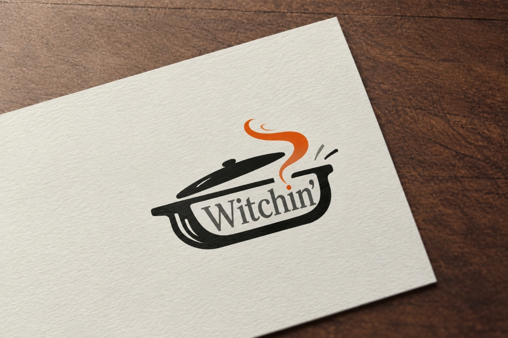

NIFT Hyderabad • Fashion Communication 2026 • By Aarchi
UI/UX CASE STUDY
A visual-first culinary companion designed to eliminate daily decision fatigue around food for single dwellers, students, and busy urbanites by bridging recipe discovery, live portion math, and instant grocery checkout into one seamless flow.
Role
Creative Director & UI/UX DesignerCRISPY PANEER BURGER
Serves 2 • Ready in 20 mins
Ria Sharma
This project explores functional UX and Information Architecture to overcome the cognitive friction and exhaustion of daily meal decisions through tactile, playful, and responsive UI design.
Witchin' is architected to eliminate daily cooking fatigue experienced by young professionals and students living away from home. While standard recipe apps treat cooking as an isolated culinary chore, Witchin' combines intuitive pantry search, dynamic portion geometry, and instant quick-commerce delivery.
Platform
During ethnographic research at NIFT and urban hostels, young adults reported discarding 35% of groceries due to recipe mismatch, while spending 20+ minutes nightly scrolling food delivery apps in despair. Witchin' was designed to transform that emotional overwhelm into culinary flow.
Existing cooking apps and video tutorials are built for experienced chefs with fully-stocked pantries, leaving everyday people paralyzed by recipes, portion math, and missing ingredients.
Recipes demand 15+ exotic spices and ingredients not in normal kitchens.
Static portion sizing forces cooks to calculate ratios with wet/oily hands.
12-minute YouTube videos require constant screen pausing and rewinding.
Disconnected grocery lists require manual typing into Blinkit or Zepto.
Food waste builds up as leftover ingredients sit forgotten in the fridge.
Witchin' builds an end-to-end culinary system where users search with existing groceries, portion scaling happens with 1 tap, and grocery checkout takes under 30 seconds.
Kitchen Rescue Search: Input existing fridge groceries to discover curated recipes instantly.
Dynamic Portion Geometry: Interactive [-] N [+] steppers recompute ingredients on the fly.
30-Second Micro-Reels: Quick visual steps without having to endure bloated 12-minute intros.
1-Tap Quick Commerce: Export missing items directly to Blinkit & Zepto carts.
Bento Meal Planner: Weekly meal scheduling linked to a consolidated grocery checklist.
Design Flow
1. Research & Ideation • 2. Design & Prototype • 3. Usability
Development
1. Scaffolding • 2. Port Testing • 3. Deployment
Turn concept from ethnographic interviews into a clear MVP product roadmap.
Sketch wireframes, map user journeys, and establish Bento design tokens.
Convert designs into responsive, zero-latency code with 36 authentic recipes.
Launch to GitHub repo, run usability tests, and publish academic case study.
01 Narrative
02 User Model
03 IA Spec
04 Wireframes
05 Design System
06 Deployment